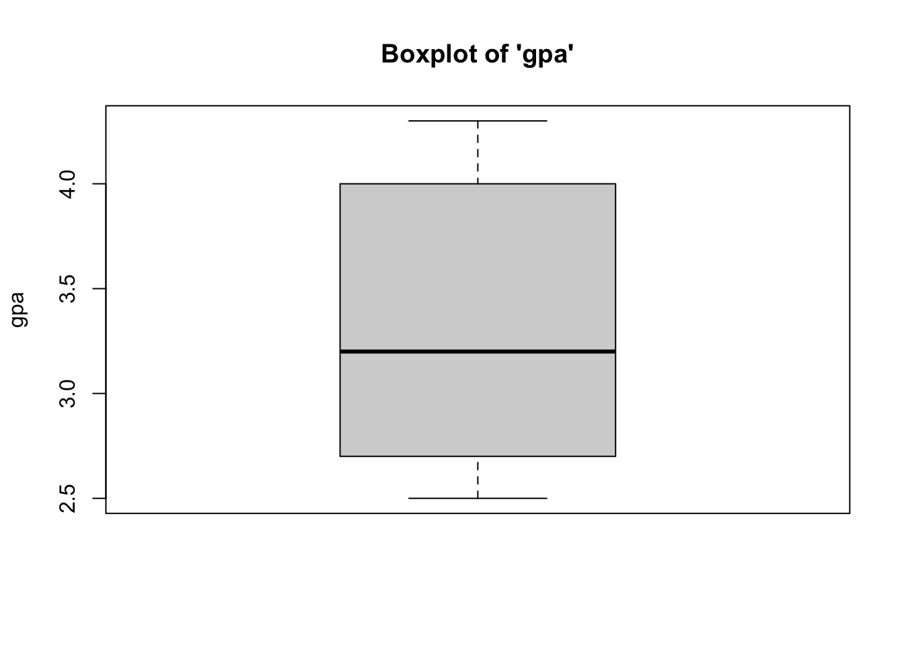
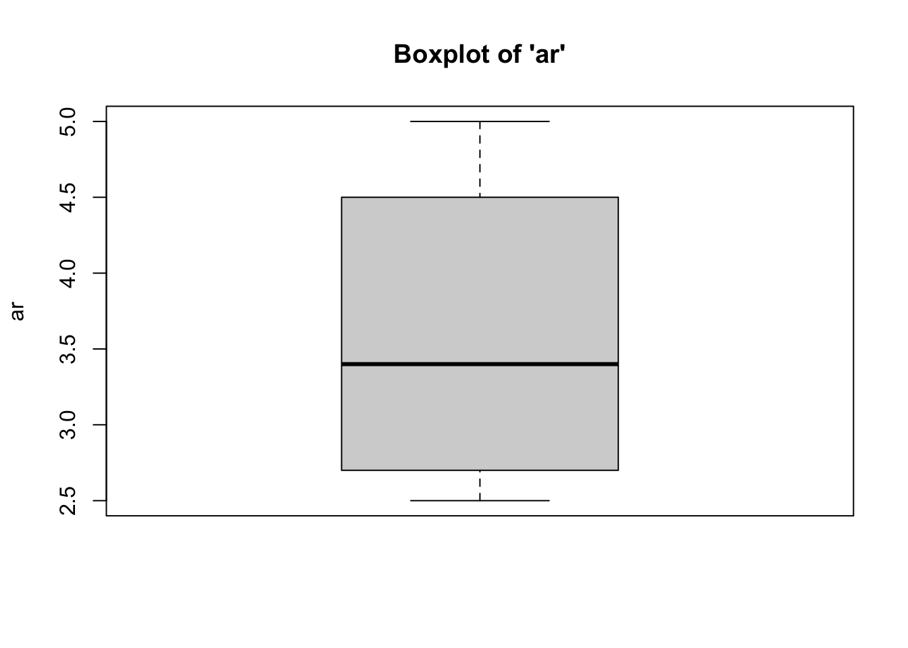
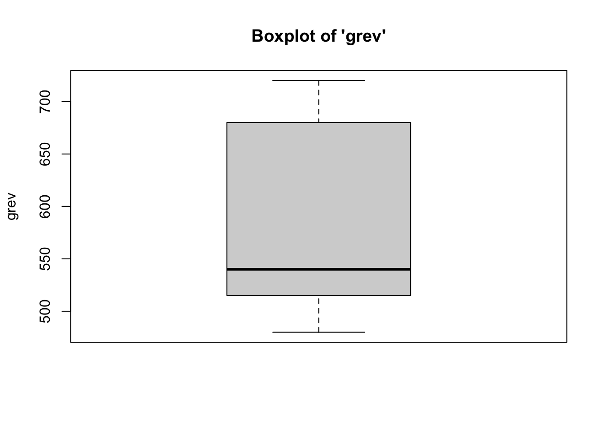
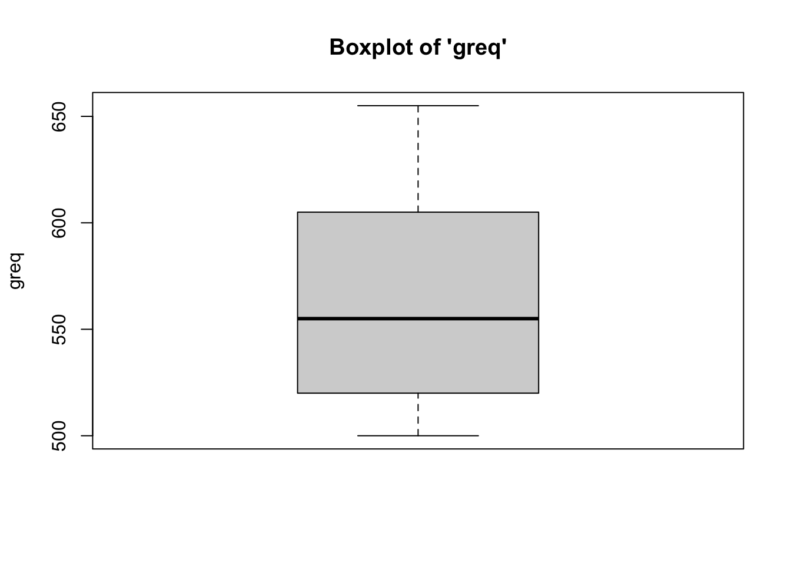
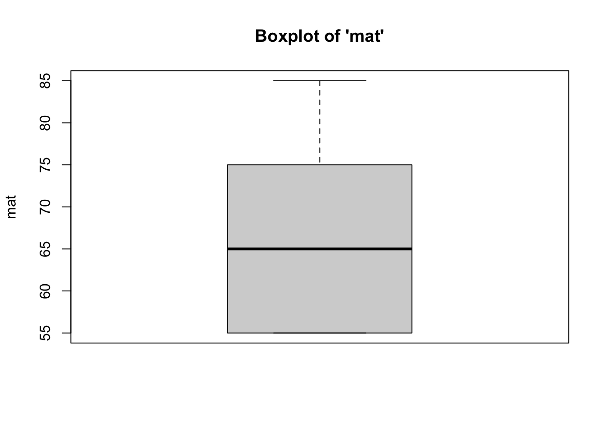
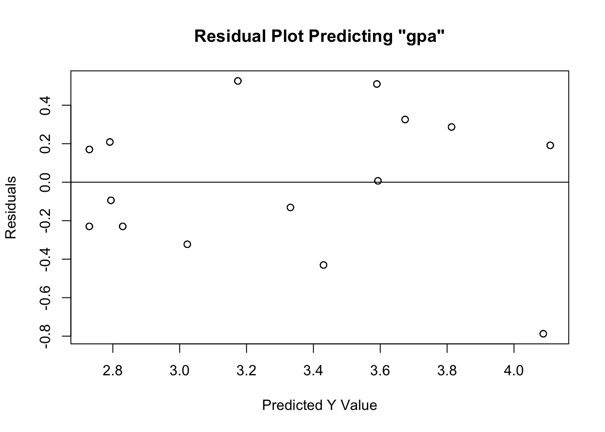

OLS Regression Example
Can we predict/explain variation in a person’s graduate school GPA from a variety of pre-graduate school factors?
What is the Regression?
The OLS regression examines the predictive relationship between some independent variable(s), and an interval-ratio dependent variable. The test tells us about the effect (slope) of any independent (X) variable on an interval-ratio dependent (Y) variable. In particular, the regression equation looks at how values of an x variable “predict” a specific Y value.
For this example, the OLS regression works well because we’re looking
at how variation in a person’s graduate school GPA (gpa, an
interval-ratio variable ranging from 2.5 to 4.3) can be
predicted/explained by variation in four other pre-graduate school
variables on which students were assessed:
- the average rating from their recommenders (
ar, an interval-ratio variable ranging from 2.5 to 5.0) - their GRE-Verbal score (
grev, an interval-ratio variable ranging from 480 to 720) - their GRE-Quantitative score (
grev, an interval-ratio variable ranging from 480 to 720) - their score on the
Miller
Analogies Test, which measures their analytical thinking
(
mat, an interval-ratio variable ranging from 55 to 85)
summary(lm(gpa ~ ar + grev + mat + greq, data=data))
Reading in the Data
In total, we have 60 individuals. Below, show an image of their data in a spreadsheet and list their respective scores. The data are as follows:

GPA: 3.2, 4.1, 3.0, 2.6, 3.7, 4.0, 4.3, 2.7, 3.6, 4.1, 2.7, 2.9, 2.5, 3.0, 3.3, 3.2, 4.1, 3.0, 2.6, 3.7, 4.0, 4.3, 2.7, 3.6, 4.1, 2.7, 2.9, 2.5, 3.0, 3.3, 3.2, 4.1, 3.0, 2.6, 3.7, 4.0, 4.3, 2.7, 3.6, 4.1, 2.7, 2.9, 2.5, 3.0, 3.3, 3.2, 4.1, 3.0, 2.6, 3.7, 4.0, 4.3, 2.7, 3.6, 4.1, 2.7, 2.9, 2.5, 3.0, 3.3
Average Recommender Rating: 2.7, 4.5, 2.5, 3.1, 3.6, 4.3, 4.6, 3.0, 4.7, 3.4, 3.7, 2.6, 3.1, 2.7, 5.0, 2.7, 4.5, 2.5, 3.1, 3.6, 4.3, 4.6, 3.0, 4.7, 3.4, 3.7, 2.6, 3.1, 2.7, 5.0, 2.7, 4.5, 2.5, 3.1, 3.6, 4.3, 4.6, 3.0, 4.7, 3.4, 3.7, 2.6, 3.1, 2.7, 5.0, 2.7, 4.5, 2.5, 3.1, 3.6, 4.3, 4.6, 3.0, 4.7, 3.4, 3.7, 2.6, 3.1, 2.7, 5.0.
GRE Verbal Score: 540, 680, 480, 520, 490, 535, 720, 500, 575, 690, 545, 515, 520, 710, 610, 540, 680, 480, 520, 490, 535, 720, 500, 575, 690, 545, 515, 520, 710, 610, 540, 680, 480, 520, 490, 535, 720, 500, 575, 690, 545, 515, 520, 710, 610, 540, 680, 480, 520, 490, 535, 720, 500, 575, 690, 545, 515, 520, 710, 610.
GRE Quantitative Score: 625, 575, 520, 545, 520, 655, 630, 500, 605, 555, 505, 540, 520, 585, 600, 625, 575, 520, 545, 520, 655, 630, 500, 605, 555, 505, 540, 520, 585, 600, 625, 575, 520, 545, 520, 655, 630, 500, 605, 555, 505, 540, 520, 585, 600, 625, 575, 520, 545, 520, 655, 630, 500, 605, 555, 505, 540, 520, 585, 600.
Miller Analogies Test Score: 65, 75, 65, 55, 75, 65, 75, 75, 65, 75, 55, 55, 55, 65, 85, 65, 75, 65, 55, 75, 65, 75, 75, 65, 75, 55, 55, 55, 65, 85, 65, 75, 65, 55, 75, 65, 75, 75, 65, 75, 55, 55, 55, 65, 85, 65, 75, 65, 55, 75, 65, 75, 75, 65, 75, 55, 55, 55, 65, 85.
As in the Intro to
R vignette, we can create an object out of a list of numbers using
the concatenate c
function.
Knowing that we have five variables, we have to read in the variables separately (listing the values for each observation). To do so, we can use the following code:
gpa <- c(3.2, 4.1, 3.0, 2.6, 3.7, 4.0, 4.3, 2.7, 3.6, 4.1, 2.7, 2.9, 2.5, 3.0, 3.3, 3.2, 4.1, 3.0, 2.6, 3.7, 4.0, 4.3, 2.7, 3.6, 4.1, 2.7, 2.9, 2.5, 3.0, 3.3, 3.2, 4.1, 3.0, 2.6, 3.7, 4.0, 4.3, 2.7, 3.6, 4.1, 2.7, 2.9, 2.5, 3.0, 3.3, 3.2, 4.1, 3.0, 2.6, 3.7, 4.0, 4.3, 2.7, 3.6, 4.1, 2.7, 2.9, 2.5, 3.0, 3.3)
ar <- c(2.7, 4.5, 2.5, 3.1, 3.6, 4.3, 4.6, 3.0, 4.7, 3.4, 3.7, 2.6, 3.1, 2.7, 5.0, 2.7, 4.5, 2.5, 3.1, 3.6, 4.3, 4.6, 3.0, 4.7, 3.4, 3.7, 2.6, 3.1, 2.7, 5.0, 2.7, 4.5, 2.5, 3.1, 3.6, 4.3, 4.6, 3.0, 4.7, 3.4, 3.7, 2.6, 3.1, 2.7, 5.0, 2.7, 4.5, 2.5, 3.1, 3.6, 4.3, 4.6, 3.0, 4.7, 3.4, 3.7, 2.6, 3.1, 2.7, 5.0)
grev <- c(540, 680, 480, 520, 490, 535, 720, 500, 575, 690, 545, 515, 520, 710, 610, 540, 680, 480, 520, 490, 535, 720, 500, 575, 690, 545, 515, 520, 710, 610, 540, 680, 480, 520, 490, 535, 720, 500, 575, 690, 545, 515, 520, 710, 610, 540, 680, 480, 520, 490, 535, 720, 500, 575, 690, 545, 515, 520, 710, 610)
greq <- c(625, 575, 520, 545, 520, 655, 630, 500, 605, 555, 505, 540, 520, 585, 600, 625, 575, 520, 545, 520, 655, 630, 500, 605, 555, 505, 540, 520, 585, 600, 625, 575, 520, 545, 520, 655, 630, 500, 605, 555, 505, 540, 520, 585, 600, 625, 575, 520, 545, 520, 655, 630, 500, 605, 555, 505, 540, 520, 585, 600)
mat <- c(65, 75, 65, 55, 75, 65, 75, 75, 65, 75, 55, 55, 55, 65, 85, 65, 75, 65, 55, 75, 65, 75, 75, 65, 75, 55, 55, 55, 65, 85, 65, 75, 65, 55, 75, 65, 75, 75, 65, 75, 55, 55, 55, 65, 85, 65, 75, 65, 55, 75, 65, 75, 75, 65, 75, 55, 55, 55, 65, 85)Where the first number in each list corresponds with the number in
the first observation . For example, the first observation in the list
for gpa is 3.2, which corresponds with the
first observation in the mat list, of 65.
Next, to appropriately prepare the data for analysis, we have to
merge these five lists. To merge, as in the Intro to R vignette, we
can use the data.frame
function.
Now we can call the data…
## gpa ar grev greq mat
## 1 3.2 2.7 540 625 65
## 2 4.1 4.5 680 575 75
## 3 3.0 2.5 480 520 65
## 4 2.6 3.1 520 545 55
## 5 3.7 3.6 490 520 75
## 6 4.0 4.3 535 655 65
## 7 4.3 4.6 720 630 75
## 8 2.7 3.0 500 500 75
## 9 3.6 4.7 575 605 65
## 10 4.1 3.4 690 555 75
## 11 2.7 3.7 545 505 55
## 12 2.9 2.6 515 540 55
## 13 2.5 3.1 520 520 55
## 14 3.0 2.7 710 585 65
## 15 3.3 5.0 610 600 85
## 16 3.2 2.7 540 625 65
## 17 4.1 4.5 680 575 75
## 18 3.0 2.5 480 520 65
## 19 2.6 3.1 520 545 55
## 20 3.7 3.6 490 520 75
## 21 4.0 4.3 535 655 65
## 22 4.3 4.6 720 630 75
## 23 2.7 3.0 500 500 75
## 24 3.6 4.7 575 605 65
## 25 4.1 3.4 690 555 75
## 26 2.7 3.7 545 505 55
## 27 2.9 2.6 515 540 55
## 28 2.5 3.1 520 520 55
## 29 3.0 2.7 710 585 65
## 30 3.3 5.0 610 600 85
## 31 3.2 2.7 540 625 65
## 32 4.1 4.5 680 575 75
## 33 3.0 2.5 480 520 65
## 34 2.6 3.1 520 545 55
## 35 3.7 3.6 490 520 75
## 36 4.0 4.3 535 655 65
## 37 4.3 4.6 720 630 75
## 38 2.7 3.0 500 500 75
## 39 3.6 4.7 575 605 65
## 40 4.1 3.4 690 555 75
## 41 2.7 3.7 545 505 55
## 42 2.9 2.6 515 540 55
## 43 2.5 3.1 520 520 55
## 44 3.0 2.7 710 585 65
## 45 3.3 5.0 610 600 85
## 46 3.2 2.7 540 625 65
## 47 4.1 4.5 680 575 75
## 48 3.0 2.5 480 520 65
## 49 2.6 3.1 520 545 55
## 50 3.7 3.6 490 520 75
## 51 4.0 4.3 535 655 65
## 52 4.3 4.6 720 630 75
## 53 2.7 3.0 500 500 75
## 54 3.6 4.7 575 605 65
## 55 4.1 3.4 690 555 75
## 56 2.7 3.7 545 505 55
## 57 2.9 2.6 515 540 55
## 58 2.5 3.1 520 520 55
## 59 3.0 2.7 710 585 65
## 60 3.3 5.0 610 600 85Assumptions and Diagnostics for Regression
The assumptions for the regression are…
- Adequate Sample Size
- Absence of Outliers
- Absence of Multicollinearity and Singluarity
- Linearity, Normality, and Homoscedasticity (Homogeneity of Variance)
In addition, the previously-discussed assumptions for other tests (independence of observations) is implied, since all of these bivariate tests require random samples. Beyond this, the OLS regression requires an interval-ratio outcome variable.
1. Adequate Sample Size
- According to Green (1991), as cited in Tabachnick and Fidel (2006), adequate sample size is determined by the modified equation \(N \geq 50 + 8(k)\)
Where \(k\) is the number of independent variables included in the regression model.
- Given that we have four IVs/predictor
variables, the minimum number of cases to be adequate is 82 (\(82 = 50 + 8(4)\)). Therefore, with only 60
observations in the data set, we do not have enough cases to adequately
run the regression model. That is,
we have violated (not met) the assumption of adequate sample size. In almost all cases, I would advise not proceeding with the regression model, however, given that this is an example, I will proceed.
2. Absence of Outliers
To identify outliers, simply look at the boxplots for each variable in the model (Y and all Xs) to see “how outlying, these outliers are.” In most cases, outliers should remain in the data. Need strong justification for removing outlying cases.





- We can see from the boxplots that the
distributions of the variables are relatively normal, with no outliers.
Therefore,
we have met the assumption of absence of outliers. Interestingly, the boxplot for the GRE Verbal variable has the median is closer to the 25th percentile. Equally as interesting, the boxplot for the Miller Analogies Test variable is missing a lower whisker, indicating that the lowest extreme case is similar to/the same as the 25th percentile case.
3. Multicollinearity and Singularity
Multicollinearity: Independent variables (more) highly correlated with one another (compared to their correlation with the DV).
- Check the correlation matrix for variables.
## gpa ar grev mat greq
## gpa 1
## ar 0.62 1
## grev 0.58 0.41 1
## mat 0.6 0.52 0.43 1
## greq 0.61 0.51 0.47 0.27 1- We can see from the correlation matrix that
none of the bivariate relationships between the independent variables
(
ar,grev,mat,greq) are above a correlation coefficient of \(r \approx .90\). Therefore,we have met the assumption of absence of multicollinearity.
Singularity: If independent variables included are (together) all possible subsets of measure also included in model.
- Look at the items and determine if they are subsets of other items also included.
- Based on the data, none of the independent
variables are subsets of one another. While the GRE Verbal and the GRE
Quantitative are subsets of the larger GRE, they would only count as
singularity if we also included an overall or summative GRE score that
was made up of the scores for the GRE Verbal and the GRE Quantitative.
As such,
we have met the assumption of absence of singularity.
4. Linearity, Normality, and Homoskedasticity
- Linearity: Variables move together in a linear fashion.
- Normality: Variables are normally-distributed.
- Homoskedasticity: Homogeneity of Variance - Variance of variables
are similar (10:1, 3:1 for SDs).
- Visual inspection of Residuals Plot to see if relationship is linear, normal, and similar variances. Plot should have points that extend beyond both sides of the 0 line (normality), should not have a U or inverted-U shape in the points (linearity), and it should not have a funnel shape, where points are tightly clustered near the 0 line at one end of the plot, and completely dispersed along y-axis at other end of plot (homoskedasticity).

- Based on the residuals plot (the difference
between the actual \(Y\) and the \(\hat{Y}\)), we see that
we have met the assumptions of linearity, normality, and homoskedasticity. Linearity is met given that the residuals do not exhibit a non-linear (e.g. curvilinear) relationship about the 0 distance (from \(\hat{Y}\)) line. Normality is met given that the residuals do not have a hard stop on either side of the line – that is, they are evenly distributed about the 0 distance (from \(\hat{Y}\)) line. Finally, homoskedasticity is met given that the residuals are evenly distanced from the 0 distance (from \(\hat{Y}\)) line at all values of \(\hat{Y}\) – as exemplified the lack of “fanning out” on one end.
The Regression Calculation
The calculation for the Regression is:
\(\hat{Y} = b_0 + b_1X_1 + b_2X_2\)
Where…
- \(\hat{Y}\) is the predicted Y value for the combination of slopes for X values
- \(b_0\) is the intercept
- \(b_1\) is the slope associated with \(X_1\)
- \(b_2\) is the slope associated with \(X_2\)
- \(X_1\) is a specific value for the first \(X\) variable that you can plug in for a specific case
- \(X_2\) is a specific value for the second \(X\) variable that you can plug in for a specific case
Running the Regression
For Regression, within the lm function, which stands for
linear model, the dependent variable is listed first and the
independent variable is listed second.
This may seem confusing, so it’s best to wrap our lm function in a summary call…
##
## Call:
## lm(formula = gpa ~ ar + grev + mat + greq, data = data)
##
## Residuals:
## Min 1Q Median 3Q Max
## -0.7876 -0.2297 0.0069 0.2868 0.5260
##
## Coefficients:
## Estimate Std. Error t value Pr(>|t|)
## (Intercept) -1.738107 0.640989 -2.712 0.00892 **
## ar 0.144233 0.076185 1.893 0.06360 .
## grev 0.001524 0.000708 2.152 0.03580 *
## mat 0.020896 0.006438 3.246 0.00200 **
## greq 0.003998 0.001234 3.240 0.00203 **
## ---
## Signif. codes: 0 '***' 0.001 '**' 0.01 '*' 0.05 '.' 0.1 ' ' 1
##
## Residual standard error: 0.3693 on 55 degrees of freedom
## Multiple R-squared: 0.6405, Adjusted R-squared: 0.6143
## F-statistic: 24.49 on 4 and 55 DF, p-value: 1.128e-11To interpret the findings, we report the following information:
The test used
The variables used in the full model
For significant variables, how a variable’s slope affects the outcome
The amount of variance in the outcome explained by the combination of IVs.
- In the output above, using an OLS
regression, we see the Y-intercept is a GPA value of -1.738. This is the
predicted value of Y (\(\hat{Y}\)) when
all of the \(X\) values equal zero. We
see that the regression coefficient - \(b\) - (AKA slope) for the variables
grev,mat, andgreqare all positively and significantly related to the outcome variable. First, GRE Verbal score, net of all other variables, is significant and positively related to GPA, such that for every 1-unit increase in a person’s GRE Verbal score, there is an associated (predicted) 001524-unit increase in their GPA. Considering the Miller Analogies Test, which is significant and positively related to GPA, net of all other variables in the model, for every 1-unit increase in a person’s Miller Analogies Test score, there is an associated .020896-unit increase in their GPA. Finally, GRE Quantitative score is significant and positively related to GPA, when controlling for all other variables, such that for every 1-unit increase in a person’s GRE Quantitative score, there is an associated 003998-unit increase in their GPA. Beyond this, we see that the Recommender’s Average Rating for a student is non-significant in the model, and is therefore unrelated to the outcome, net of all other variables.
We also see that this model is significantly better than the null model (with no predictors), as indicated by the omnibus F test: \(F(4,55) = 24.49, p\lt.05\).
Finally, for this full model, which predicts GPA from four pre-graduate school factors (ar,grev,mat, andgreq), the model fit statistic, the \(R^2\), is .6405. This indicates that 64.06 percent of the variation in a person’s GPA is explained by the combination of their average ratings, their GRE Verbal Score, their GRE Quantitative Score, and their score on the Miller Analogies Test.
- In the output above, using an OLS
regression, we see the Y-intercept is a GPA value of -1.738. This is the
predicted value of Y (\(\hat{Y}\)) when
all of the \(X\) values equal zero. We
see that the regression coefficient - \(b\) - (AKA slope) for the variables